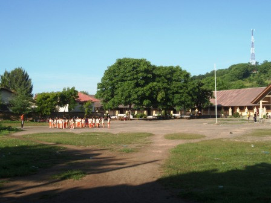
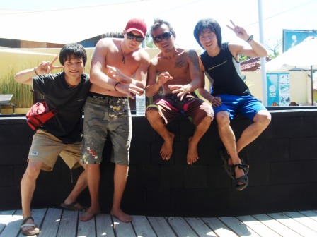
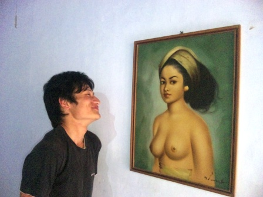

6日目～最終試験、そしてTrawaganとの別れ～

今日も朝から気持ちのいい晴れである。本日の昼にダイビングに関する筆記テストを行い、合格点を取ることで最終的な認定証(Cカード)を取得することができる。宿からメインストリートに出る途中には小学校があり、今日も朝の運動をしていた。

海岸のカフェバーにて、試験前の復習。ダイビングでは深く潜ると体の中に窒素がたまってしまい、急に浮上すると体内で窒素が気泡となってしまうらしい。これを減圧症といい、減圧症を防ぐために深度から限界潜水時間を計算せねばならない。そのためのツールが手に持っているカードである。結果は…、

二人とも合格点を取ることができ、ライセンスを取得することができた。インストラクターと、たまたまそこにいたおじさんとともに記念撮影。本当に、お世話になりました。たった4日間だったけれども、このダイビングスクールで学んだ日々はとても思い出深いものとなった。

ロンボク本島へ戻るのは16時ということなので、それまで時間があるため島のビューポイントに散歩に行くことにした。ビューポイントとは、ギリ・トゥラワガンのほぼ中央に位置する小高い丘の頂上のことである。ほぼ真上から強烈な日差しが降り注いでいる。途中、放牧されている牛がいた。

丘からは、隣の島であるギリ・メノ、さらにその隣のギリ・アイルや、雲に隠れたロンボク本島のリンジャニ山を望むこともできた。このサンゴ礁に囲まれた島々と今日でお別れかと思うとかなり名残惜しい。

真昼に近いので、太陽がほぼ真上から照りつける。そのため、影がほとんど足元にしかできない。

散策を終え、再びダイブショップの前に戻ってきた。これは、ギリ３島周辺のダイブポイントマップである。僕たちはこの中のBounty、MenoWall、Shark Point、Coral
Fun Gardenの４つのポイントでダイビングを満喫した。これを見ると、ギリ３島はあたかもダイビングスポットの中に位置しているようだ。

さようなら、GiliTrawagan。そして、Dream Diversの人たち。

この日僕たちが向かったのはロンボク島にあるスンギギという町。最初にロンボク島に来た時に滞在した町である。その時宿泊したラジャズ・バンガローはかなり居心地がよかったが、少し値段が高めだったので(それでも一泊一人７５０円程度)、少し宿泊費を安くするべく選んだのがこのニュー・ポンドック・シンタ。設備は申し分なく、なにしろ広い。これで一人一泊４００円なのだから驚きである。

この宿の宿泊手続きを山部がしている最中に、大井は宿の裏でオオトカゲを発見！急いで写真に撮ったが、この写真でどこにいるのか確認できるだろうか？写真に中央付近にその後ろ姿がとらえられている。

男二人の宿泊ということで、主人が気を利かせてくれたのだろうか。室内には女性の肖像画が。うっとりと大井は見入っている。

近くのワルン(食堂)で晩飯。パスタとクルプッ＆目玉焼き付ナシゴレンを注文。この後、スンギギのダイブショップオフィス前に行った。なぜなら、スンギギについたときにインストラクターさんのご自宅にお邪魔させてもらい、夜にサテアヤン(焼き鳥)パーティーがあるから来ないかと誘われていたのだ。しかし、行ってみると誰もいない。約束の時間を間違えたのだろうか。しばらく待っても誰も来ないので、仕方なく宿に戻り、寝ることにした。日本を出発してから約１週間。ダイビングのライセンス取得という、僕たちの旅の第一弾は無事に終了した。いよいよ明日は、ようやく研究から解放され日本から一人やってくるKENと合流する日だ。第二弾は日本の国土よりも広い面積を誇る、スマトラ島でのジャングル探検である。
翌日へ